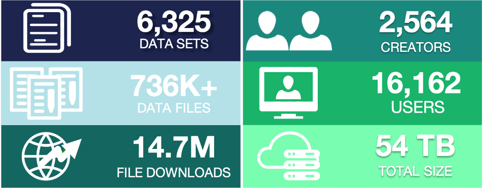

Exploring the Arctic through Data
Welcome
This is a compilation of datasets from the Arctic Data Center, the primary repository for the Arctic Section of the National Science Foundation’s Office of Polar Programs. Each of these sections contains open source, CC-0 or CC-BY data files ready for download and reuse.
In this Bookdown, you’ll find additional background information about the dataset gathered from that dataset creator’s lab pages, associated journal articles, and related blog posts. They are meant to provide context and direction for using the dataset in a classroom setting, but feel free to use the data as it suits your educational needs.
Please share how you or your students are using these datasets. We hope to see these materials evolve in a collaborative manner. Email info@arcticdata.io to add to the conversation, or contribute on the github issues tab.
Overview

The Arctic Data Center is a place for researchers from around the world working in the Arctic to efficiently share, discover, access, and interpret complex data about the Arctic with less effort. Part of our mission is to provide hands-on training to researchers and students at Arctic and domain research conferences, as well as in dedicated training sessions targeting Arctic researchers. We especially target early-career and under-represented populations for our training opportunities. In 2020, we were able to support the development of undergraduate-level educational materials through our data fellowship program (NSF award number 1546024). These materials are open source and available for reuse and/or modification either at the associated Github repository, the Arctic Data Center Training page, or the DataONE Skillbuilding Hub.
 (Numbers last updated January 2021.)
With over 6300 datasets, the Arctic Data Center repository is uniquely positioned to help more students understand one about one of the planet’s fastest-changing ecosystems: the Arctic. These educational materials are intended to equip students with the necessary tools and resources to unearth the story behind just a few of the datasets in the data catalog.
Encompassing Earth’s northern most region, the Arctic is an icy sea that is surrounded by land, characterized by a harsh climate with extreme variation in light and temperature. Diverse landscapes — from the sea ice to coastal wetlands, upland tundra, mountains, wide rivers, and the sea itself — support abundant wildlife, geological features, and many cultures, making the Arctic a region like no other in the world.
The Arctic is warming twice as fast as the global average (Serreze & Barry, 2011). The cause of such rapid warming is straightforward and well understood: it is human-caused climate change, and it is altering the relative amount of the Sun’s energy that is absorbed, reflected, or radiated in the Arctic.
According to 15th annual NOAA Arctic Report Card, the sea ice extent in October of 2020 dropped to the lowest levels on record. Dramatic drops in Arctic ice like this are the main driver for rapid Arctic changes. Effects of a warming atmosphere on physical, chemical, biological, and human components of Arctic ecosystems are myriad, far-reaching, and accelerating (Wendisch 2017)[https://doi.org/10.1029/2017EO064803]. There is likely no facet of Arctic life that will remain untouched by the immensity of these changes.
Studying and understanding the Arctic is essential to saving it, and ultimately ourselves. The Arctic Data Center repository is rich with real-world Arctic data just waiting to be explored. If you’re ready to learn how, let’s get started.
The National Wildlife Federation put together this Activity Guide if you’d like to learn more about the Arctic and climate change.